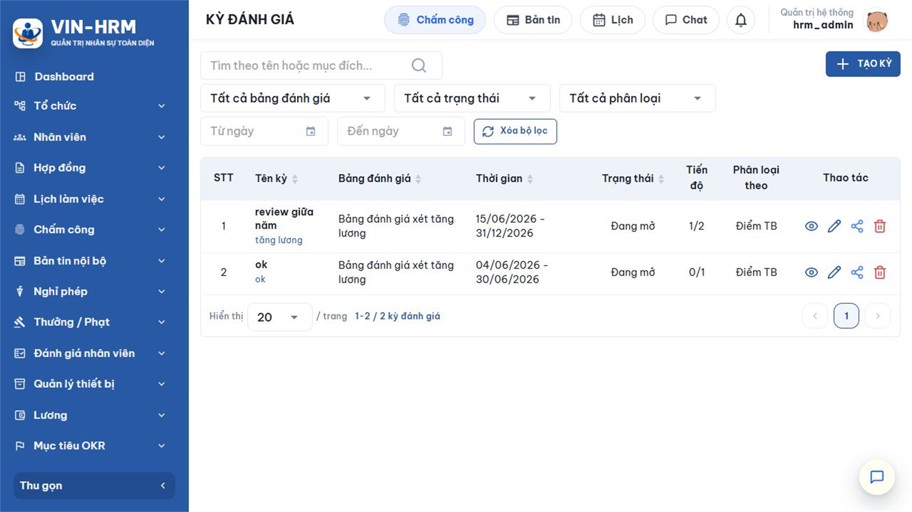
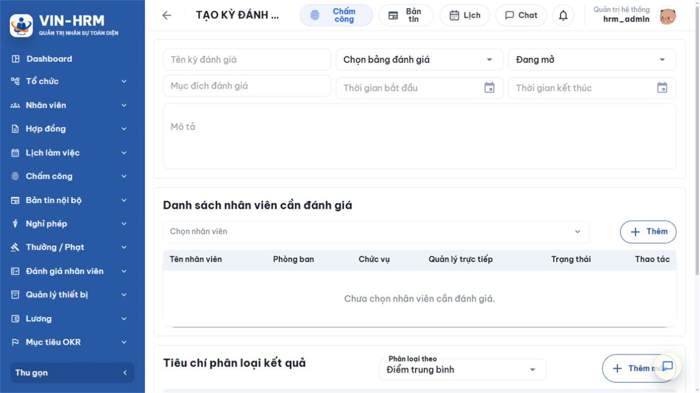
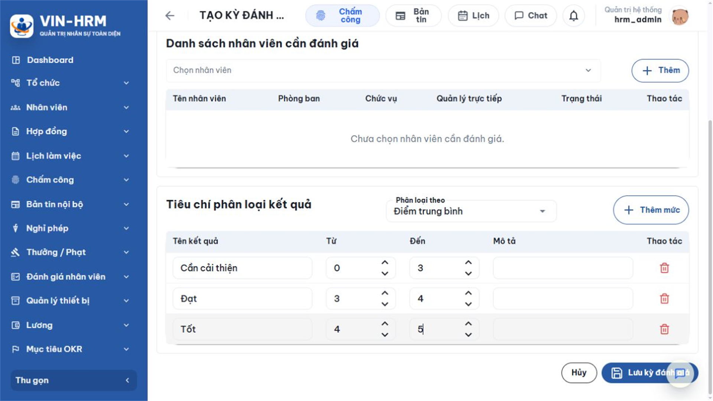
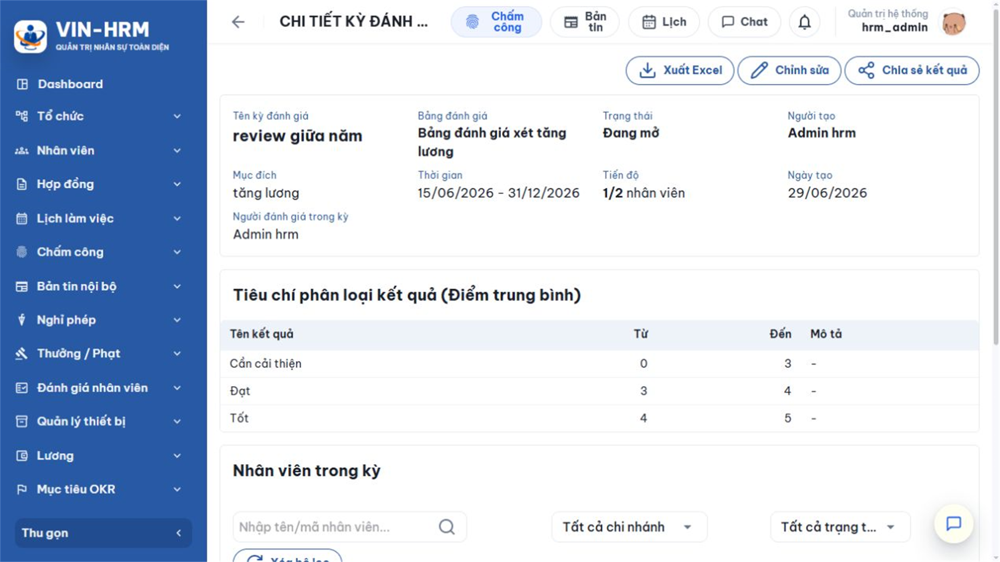
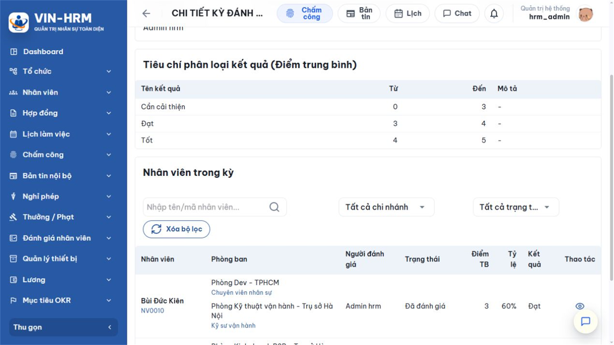
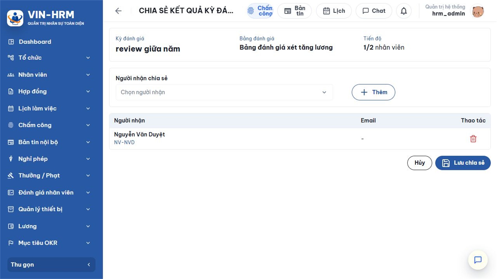

1. Mục đích, phạm vi và luồng nghiệp vụ
Kỳ đánh giá là một kế hoạch đánh giá theo đợt. Mỗi kỳ xác định rõ thời gian, mục đích, một Bảng đánh giá dùng chung, danh sách nhân viên và quy tắc phân loại kết quả. Chức năng phù hợp với đánh giá thử việc, theo tháng/quý/năm, sau dự án, xét thưởng, xét tăng lương hoặc xem xét bổ nhiệm.
Khác với một phiếu đánh giá độc lập, Kỳ đánh giá giúp người phụ trách quản lý nhiều nhân viên trong cùng một kế hoạch, biết ai đã được chấm, ai chưa được chấm và tổng hợp kết quả theo cùng một thang đo. Kết quả của từng người vẫn được lưu thành phiếu đánh giá riêng nhưng liên kết với kỳ.
1.1. Luồng nghiệp vụ tổng quát
| 1. Chuẩn bị Bảng đánh giá Tạo nhóm tiêu chí → tiêu chí có hệ số → các mức đánh giá có điểm → chuyển sang Đang hoạt động. |
| ↓ |
| 2. Tạo Kỳ đánh giá Nhập thông tin kỳ → chọn một Bảng đánh giá → chọn nhân viên → khai báo cách phân loại kết quả. |
| ↓ |
| 3. Mở kỳ và thực hiện Người tạo kỳ mở chi tiết → chọn nhân viên Chưa đánh giá → chọn mức cho từng tiêu chí → Lưu và gửi. |
| ↓ |
| 4. Cập nhật tiến độ và phân loại Phiếu được gửi → nhân viên chuyển sang Đã đánh giá → hệ thống chụp điểm và gán mức kết quả của kỳ. |
| ↓ |
| 5. Hoàn tất và sử dụng kết quả Kiểm tra đủ nhân viên → chuyển kỳ sang Hoàn tất → chia sẻ chỉ xem hoặc xuất Excel khi cần. |
1.2. Ba dữ liệu có quan hệ với nhau
| Dữ liệu | Vai trò | Quan hệ |
|---|---|---|
| Bảng đánh giá | Là cấu trúc chấm điểm gồm nhóm, tiêu chí, hệ số và mức điểm. | Một kỳ chỉ dùng một bảng. Bảng phải đang hoạt động và đủ dữ liệu để chấm. |
| Kỳ đánh giá | Là kế hoạch theo đợt, quản lý danh sách người và quy tắc phân loại. | Một kỳ có nhiều nhân viên; mỗi người chỉ có một phiếu trong cùng kỳ. |
| Phiếu đánh giá nhân viên | Là kết quả chấm chi tiết của một người. | Khi gửi từ kỳ, phiếu cập nhật trạng thái và kết quả chụp nhanh tại dòng nhân viên của kỳ. |
2. Điều kiện, phân quyền và dữ liệu chuẩn bị
2.1. Quyền sử dụng
| Quyền | Ý nghĩa | Phạm vi thực tế |
|---|---|---|
| Evaluation.Create | Cho phép tạo Kỳ đánh giá và tạo phiếu đánh giá. | Danh sách nhân viên phụ thuộc phạm vi phòng ban được gán cho quyền. Phạm vi toàn bộ thì có thể chọn toàn doanh nghiệp; phạm vi giới hạn thì chỉ chọn đúng đơn vị được phép. |
| Evaluation.DirectManager | Cho phép người quản lý đánh giá nhân viên do mình quản lý trực tiếp. | Khi dùng riêng, danh sách tập trung vào các nhân viên có thông tin công việc ghi nhận người dùng là quản lý trực tiếp. |
| Evaluation.Template | Cho phép cấu hình Bảng đánh giá. | Cần cấp cho người chuẩn bị tiêu chí và thang điểm; không thay thế quyền tạo kỳ hoặc quyền đánh giá. |
| Người tạo là người điều hành kỳ Hệ thống cho phép người tạo kỳ sửa, chia sẻ và thực hiện đánh giá trong kỳ. Người được chia sẻ Kỳ đánh giá chỉ xem kết quả; không được sửa kỳ, chấm thay, chia sẻ tiếp hoặc thay đổi danh sách nhân viên. |
2.2. Dữ liệu cần sẵn sàng
- Có ít nhất một Bảng đánh giá ở trạng thái Đang hoạt động, có nhóm đang hoạt động, tiêu chí đang hoạt động, hệ số lớn hơn 0 và mức điểm đang hoạt động.
- Nhân viên cần đánh giá đang làm việc, có hồ sơ công việc và nằm trong phạm vi người tạo được phép đánh giá.
- Ngày bắt đầu, ngày kết thúc và mục đích của kỳ đã được thống nhất.
- Các mức phân loại kết quả đã xác định rõ, không chồng lấp và phù hợp thang điểm của Bảng đánh giá.
Chức năng không có một công tắc cấu hình hệ thống riêng. Việc sử dụng phụ thuộc chủ yếu vào ba quyền nêu trên, phạm vi dữ liệu của quyền, trạng thái Bảng đánh giá và dữ liệu công việc của nhân viên.
3. Danh sách Kỳ đánh giá
Mở Đánh giá nhân viên > Kỳ đánh giá. Màn hình hiển thị các kỳ do người dùng tạo và các kỳ được chia sẻ cho người dùng xem.

| Khu vực | Cách đọc và sử dụng |
|---|---|
| Tìm theo tên hoặc mục đích | Nhập một phần tên kỳ hoặc nội dung mục đích. Nên đặt tên có thời gian và phạm vi, ví dụ “Đánh giá quý III/2026 – Khối Kinh doanh”. |
| Bảng đánh giá | Lọc các kỳ đang dùng cùng một Bảng đánh giá. |
| Trạng thái | Lọc Đang mở, Hoàn thành hoặc Đã hủy. |
| Phân loại theo | Lọc kỳ xét kết quả theo Điểm trung bình hoặc Tỷ lệ phần trăm. |
| Từ ngày – Đến ngày | Lọc theo thời gian kỳ. Chọn Xóa bộ lọc để trở về danh sách đầy đủ. |
| Tiến độ | Hiển thị số người đã đánh giá trên tổng số người, ví dụ 1/2. Đây là chỉ báo cần kiểm tra trước khi hoàn tất kỳ. |
| Thao tác | Tùy quyền và trạng thái có thể mở chi tiết, sửa, chia sẻ hoặc xóa. Kỳ chỉ được chia sẻ ở chế độ xem. |
4. Tạo Kỳ đánh giá
Chọn TẠO KỲ. Biểu mẫu gồm thông tin chung, danh sách nhân viên và tiêu chí phân loại kết quả.

4.1. Ý nghĩa các trường thông tin chung
| Trường | Bắt buộc | Ý nghĩa và cách nhập |
|---|---|---|
| Tên kỳ đánh giá | Có | Tên nhận biết kế hoạch, tối đa 255 ký tự. Nên thể hiện loại kỳ, thời gian và đơn vị áp dụng. |
| Bảng đánh giá | Có | Chọn đúng cấu trúc tiêu chí sẽ dùng cho tất cả nhân viên trong kỳ. Khi tạo mới chỉ chọn bảng Đang hoạt động. Không thay bảng tùy tiện sau khi đã chấm vì sẽ làm sai tính nhất quán. |
| Trạng thái | Có | Đang mở: cho phép người tạo chấm người chưa đánh giá. Hoàn tất: đóng kỳ, không tạo thêm phiếu trong kỳ. Đã hủy: dừng kế hoạch; dùng khi kỳ không còn thực hiện. Trạng thái không đồng nghĩa tự động xóa kết quả đã có. |
| Mục đích đánh giá | Có | Lý do sử dụng kết quả, tối đa 500 ký tự, ví dụ xét tăng lương, đánh giá thử việc hoặc rà soát năng lực cuối năm. |
| Thời gian bắt đầu | Có | Ngày bắt đầu phạm vi của kỳ. Đây là mốc kế hoạch và lọc báo cáo, không tự động mở quyền nếu trạng thái chưa phù hợp. |
| Thời gian kết thúc | Có | Phải bằng hoặc sau ngày bắt đầu. Khi quá ngày, người quản lý vẫn cần chủ động kiểm tra và chuyển trạng thái phù hợp. |
| Mô tả | Không | Ghi hướng dẫn, phạm vi hoặc nguyên tắc riêng của kỳ, tối đa 1.000 ký tự. |
4.2. Chọn danh sách nhân viên
- Tại Danh sách nhân viên cần đánh giá, mở ô Chọn nhân viên.
- Tìm theo mã hoặc tên, chọn người phù hợp rồi nhấn Thêm.
- Kiểm tra phòng ban, chức vụ, quản lý trực tiếp và trạng thái trên dòng vừa thêm.
- Lặp lại đến khi đủ danh sách; tránh thêm trùng vì hệ thống chỉ chấp nhận mỗi người một lần.
- Muốn bỏ một người chưa được chấm, dùng nút xóa ở cột Thao tác. Người đã có kết quả bị khóa và không thể gỡ khỏi kỳ khi sửa.
| Phạm vi nhân viên Ô chọn chỉ trả về nhân viên đang hoạt động và thuộc phạm vi đánh giá của tài khoản. Nếu thiếu một người, kiểm tra trạng thái hồ sơ, thông tin quản lý trực tiếp, phòng ban và phạm vi quyền trước khi cho rằng hệ thống lỗi. |
5. Cấu hình phân loại kết quả
Phân loại kết quả biến một con số thành kết luận dễ dùng như “Cần cải thiện”, “Đạt” hoặc “Tốt”. Quy tắc này chỉ thuộc Kỳ đánh giá; không làm thay đổi điểm của Bảng đánh giá.

5.1. Ý nghĩa hai lựa chọn “Phân loại theo”
| Lựa chọn | Cách tính | Khi nên dùng |
|---|---|---|
| Điểm trung bình | Tổng điểm quy đổi chia tổng hệ số. Khoảng hợp lệ từ 0 đến điểm trung bình tối đa của Bảng đánh giá. | Dùng khi người đọc quen thang điểm, ví dụ 0–5. Dễ so sánh với các mức chấm 1–5. |
| Tỷ lệ phần trăm | Tổng điểm quy đổi chia điểm tối đa, nhân 100. Khoảng hợp lệ từ 0 đến 100. | Dùng khi cần chuẩn hóa nhiều bảng khác thang điểm hoặc trình bày kết quả theo tỷ lệ đạt. |
Quy đổi tại từng tiêu chí được tính bằng Điểm mức đã chọn × Hệ số tiêu chí. Tổng điểm là tổng toàn bộ điểm quy đổi. Ví dụ một tiêu chí hệ số 5 được chấm mức 3 sẽ đóng góp 15 điểm.
5.2. Quy tắc khoảng và giá trị mặc định
| Căn cứ | Cần cải thiện | Đạt | Tốt |
|---|---|---|---|
| Điểm trung bình | Từ 0 đến dưới 3 | Từ 3 đến dưới 4 | Từ 4 đến 5 |
| Tỷ lệ phần trăm | Từ 0% đến dưới 70% | Từ 70% đến dưới 85% | Từ 85% đến 100% |
Hệ thống hiểu mỗi khoảng theo nguyên tắc Từ ≤ kết quả < Đến. Riêng khoảng cuối cùng được nhận cả giá trị “Đến”. Vì vậy điểm 3 thuộc “Đạt”, không thuộc “Cần cải thiện”; điểm 5 thuộc “Tốt”.
- Tên kết quả: tên phân loại hiển thị tại dòng nhân viên và báo cáo.
- Từ: cận dưới, được tính vào khoảng.
- Đến: cận trên; phải lớn hơn Từ.
- Mô tả: giải thích ý nghĩa hoặc hành động sau phân loại.
- Thêm mức: thêm phân loại mới; các khoảng không được chồng lấp và thứ tự phải duy nhất.
| Khi đổi căn cứ phân loại Giao diện áp dụng lại ba khoảng mặc định tương ứng. Hãy kiểm tra và điều chỉnh trước khi lưu. Với Điểm trung bình, cận trên không được vượt thang điểm tối đa đang hiển thị của Bảng đánh giá; với Tỷ lệ, mọi giá trị phải nằm trong 0–100. |
6. Theo dõi và thực hiện đánh giá trong kỳ
Mở một kỳ từ danh sách. Trang chi tiết cho biết thông tin kế hoạch, quy tắc phân loại, tiến độ và từng nhân viên.


6.1. Ý nghĩa trạng thái nhân viên
| Trạng thái | Ý nghĩa | Thao tác tiếp theo |
|---|---|---|
| Chưa đánh giá | Chưa có phiếu đánh giá được gửi cho nhân viên trong kỳ. | Nếu kỳ Đang mở, người tạo kỳ có quyền với nhân viên có thể chọn nút Đánh giá. |
| Đã đánh giá | Đã có phiếu gửi thành công; hệ thống lưu người đánh giá, ngày đánh giá, điểm và phân loại. | Mở xem chi tiết; người tạo có thể sửa phiếu theo quyền hiển thị của hệ thống. Không tạo phiếu thứ hai cho cùng người trong cùng kỳ. |
6.2. Đánh giá một nhân viên trong kỳ
| Mở Kỳ đánh giá Chọn đúng kỳ đang ở trạng thái Đang mở. |
| ↓ |
| Chọn nhân viên Chưa đánh giá Nhấn biểu tượng Đánh giá trên dòng nhân viên. |
| ↓ |
| Chấm từng tiêu chí Hệ thống khóa sẵn Kỳ, Nhân viên và Bảng đánh giá → chọn mức → nhập nhận xét. |
| ↓ |
| Lưu và gửi đánh giá Đánh giá trong kỳ không lưu nháp; xác nhận gửi để hoàn tất. |
| ↓ |
| Cập nhật Kỳ đánh giá Trạng thái người → Đã đánh giá; điểm và mức phân loại được ghi nhận. |
| Không có bước lưu nháp trong kỳ Phiếu thuộc Kỳ đánh giá phải “Lưu và gửi” trực tiếp. Hãy kiểm tra toàn bộ mức điểm và nhận xét trước khi xác nhận. Chỉ người tạo kỳ mới được chấm nhân viên trong kỳ đó. |
7. Sửa, thay đổi trạng thái và xóa kỳ
7.1. Sửa Kỳ đánh giá
- Mở kỳ và chọn Sửa nếu nút được hiển thị.
- Điều chỉnh tên, mục đích, thời gian, mô tả, trạng thái, danh sách người chưa chấm hoặc quy tắc phân loại.
- Không xóa nhân viên đã được đánh giá; các dòng này được khóa để bảo toàn quan hệ với phiếu đã gửi.
- Kiểm tra lại các khoảng phân loại, sau đó chọn Lưu kỳ đánh giá.
Nếu Bảng đánh giá cũ đã ngừng hoạt động, kỳ hiện hữu vẫn có thể hiển thị bảng đó để giữ lịch sử; khi tạo kỳ mới chỉ được chọn bảng đang hoạt động. Việc thay đổi Bảng đánh giá sau khi đã có kết quả không nên thực hiện.
7.2. Chọn trạng thái đúng
| Trạng thái | Dùng khi | Ảnh hưởng |
|---|---|---|
| Đang mở | Kỳ đang chuẩn bị hoặc đang thực hiện. | Người tạo có thể đánh giá người Chưa đánh giá nếu còn trong phạm vi quyền. |
| Hoàn tất | Đã kết thúc và không cần tạo thêm phiếu. | Không thể bắt đầu đánh giá mới trong kỳ. Kết quả đã có vẫn xem và xuất được. |
| Đã hủy | Kế hoạch bị dừng hoặc tạo nhầm. | Không thể chấm tiếp. Kết quả đã ghi nhận không tự mất; cần kiểm tra trước khi chuyển trạng thái. |
7.3. Xóa kỳ
Chỉ chọn Xóa khi chắc chắn kỳ được tạo nhầm và không còn cần lưu. Nút chỉ xuất hiện theo quyền sở hữu và điều kiện dữ liệu. Trước khi xác nhận, kiểm tra số người đã đánh giá và các phiếu liên quan. Nếu hệ thống từ chối xóa, nên chuyển sang Đã hủy để giữ dấu vết thay vì tìm cách xóa dữ liệu đã phát sinh.
8. Chia sẻ và xuất kết quả
8.1. Chia sẻ Kỳ đánh giá
Từ trang chi tiết, chọn Chia sẻ kết quả, chọn người nhận rồi Lưu chia sẻ.

- Người nhận xem thông tin kỳ, danh sách nhân viên và kết quả theo phạm vi hiển thị.
- Người nhận không sửa, không chấm, không xóa và không chia sẻ tiếp kỳ.
- Muốn thu hồi, người tạo xóa người nhận khỏi danh sách chia sẻ rồi lưu lại.
- Chỉ chia sẻ cho người có nhu cầu công việc; kết quả đánh giá là dữ liệu nhân sự nhạy cảm.
8.2. Xuất Excel
Chọn Xuất Excel tại trang chi tiết để tải dữ liệu kỳ, danh sách nhân viên, trạng thái, điểm trung bình, tỷ lệ và phân loại. Sau khi tải, đối chiếu tên kỳ, số người và số người đã đánh giá với giao diện trước khi dùng làm báo cáo chính thức. Tệp xuất ra ngoài hệ thống cần được lưu tại vị trí có kiểm soát quyền truy cập.
9. Lỗi thường gặp và danh sách kiểm tra
| Hiện tượng | Nguyên nhân thường gặp | Cách xử lý |
|---|---|---|
| Không thấy nút TẠO KỲ. | Thiếu Evaluation.Create và Evaluation.DirectManager. | Đề nghị quản trị kiểm tra quyền và phạm vi của tài khoản. |
| Không chọn được Bảng đánh giá. | Bảng ngừng hoạt động hoặc chưa đủ nhóm/tiêu chí/mức đang hoạt động. | Mở Bảng đánh giá, hoàn thiện cấu trúc và bật trạng thái phù hợp. |
| Không tìm thấy nhân viên. | Nhân viên không hoạt động, ngoài phạm vi phòng ban hoặc chưa ghi nhận đúng quản lý trực tiếp. | Kiểm tra hồ sơ và thông tin công việc, sau đó tải lại biểu mẫu. |
| Không lưu được phân loại. | Từ lớn hơn hoặc bằng Đến; khoảng chồng lấp; vượt 100% hoặc vượt thang điểm. | Sắp xếp lại các khoảng liên tục, không chồng nhau và đúng miền giá trị. |
| Không thể đánh giá một người. | Kỳ không Đang mở; tài khoản không phải người tạo; nhân viên đã có phiếu hoặc ngoài phạm vi. | Kiểm tra trạng thái kỳ, người tạo, trạng thái dòng nhân viên và quyền. |
| Không gỡ được nhân viên khi sửa kỳ. | Người đó đã có phiếu đánh giá. | Giữ dòng nhân viên để bảo toàn lịch sử; chỉ gỡ người Chưa đánh giá. |
| Người được chia sẻ không sửa được kỳ. | Chia sẻ kỳ chỉ là quyền xem. | Đây là hành vi đúng. Người tạo kỳ thực hiện thay đổi. |
9.1. Kiểm tra trước khi mở kỳ
- Đúng Bảng đánh giá, thang điểm và trạng thái đang hoạt động.
- Đúng mục đích, thời gian và danh sách nhân viên.
- Không có khoảng phân loại chồng lấp; cận trên phù hợp thang điểm.
- Người tạo có quyền và phạm vi với toàn bộ danh sách.
9.2. Kiểm tra trước khi hoàn tất
- Tiến độ phản ánh đúng số người đã đánh giá.
- Các dòng Đã đánh giá có điểm, tỷ lệ và phân loại hợp lý.
- Các trường hợp Chưa đánh giá đã có giải trình hoặc kế hoạch xử lý.
- Đã xuất báo cáo và chia sẻ đúng người nếu quy trình nội bộ yêu cầu.